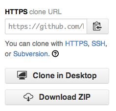

There are several ways to clone repositories available on GitHub.
When you view a repository while signed in to your account, the sidebar shows a choice of URLs you can use to clone the project onto your computer:

For information on setting or changing your remote URL, see "Changing a remote's URL."
Cloning with HTTPS (recommended)
The https:// clone URLs are available on all repositories, public and private. They are smart, so they will provide you with either read-only or read/write access, depending on your permissions to the repository.
These URLs work everywhere--even if you are behind a firewall or proxy. In certain cases, if you'd rather use SSH, you might be able to use SSH over the HTTPS port.
When you git fetch, git pull, or git push to the remote repository using HTTPS, you'll be asked for your GitHub username and password.
- If you have two-factor authentication enabled, you must create a personal access token to use instead of your GitHub password.
- You can use a credential helper so Git will remember your GitHub username and password every time it talks to GitHub.
Cloning with SSH
These URLs provide access to a Git repository via SSH, which is a secure protocol. To use these URLs, you must have an SSH keypair generated on your computer, and attached to your GitHub account.
The GitHub desktop clients automatically configure SSH keys for you, if you don't want to muck around on the command line.
Tip: SSH URLs can be used locally, or as a secure way of deploying your code to production servers. You can also use SSH agent forwarding with your deploy script to avoid managing keys on the server.
Cloning with Subversion
You can also use a Subversion client to access any repository on GitHub. Subversion offers a vastly different feature set than Git; for a quick overview, see "What are the differences between SVN and Git?."
We have a separate article with more information on how to interact with GitHub using Subversion.
Further reading
- "Working with Remotes" from the Pro Git book